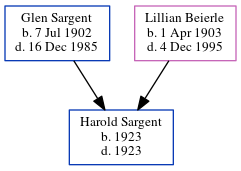

Gloria B Chartrant (née Sargent) 1924 - 1995
[ Home ] | [ Calendar ] | [ Surnames Index ] | [ Errors ] | [ Family History ]The 2nd of 6 children of Glen Sargent (a barber) and Lillian Beierle, Gloria Sargent, the fifth cousin once-removed on the mother's side of Nigel Horne, was born in Stromsburg, Polk, Nebraska, USA on 20 Jun 19241,2,3 and married Jack Chartrant (with whom she had 7 children: Christine Ann, Nicole Lynn, John, Thomas, Mary, Vanessa and Andrea) in New York, USA on 21 Jun 1945.
During her life, she was living at 990 E Street, David City, Butler, Nebraska, USA on 15 Apr 19304; and at 979 D Street, David City, Nebraska on 12 Apr 19405.
She died on 13 Dec 1995 in David City, Nebraska2,3 and was buried there at Saint Marys Cemetery after 13 Dec 19952.
Parents
- Glen Russel was born on 7 Jul 1902
- Lillian Winifred was born on 1 Apr 1903
Children
- Christine Ann was born on 3 Dec 1948
Citations
- Social Security Death Index - Findmypast
- U.S., Find A Grave Index, 1600s-Current Ancestry.com Operations, Inc.
- United States Billion Graves index - Findmypast
- US Census 1930 - Findmypast (was age 5 and the daughter of the head of the household)
- US Census 1940 - Findmypast (was age 15 and the daughter of the head of the household)
Media
1930 US Census

1940 US Census

1930 US Census Transcription - USC-1930-004951855-00631-009
1940 US Census Transcription - USC-1940-1476364958
1930 US Census Transcription - USC-1930-004951855-00631-011
Social Security Death Index - USBMD/SSDI/505262639
United States Billion Graves index - US/BMD/BILLION023603391
Family Tree
Map
Generated by ged2site. Last updated on Jul 3, 2024
Known Issues
Marriage date (21 Jun 1945) has no citations
12 Apr 1940: Not living with either parent in childhood when aged 15
Adding date of burial as 'aft 13 Dec 1995'